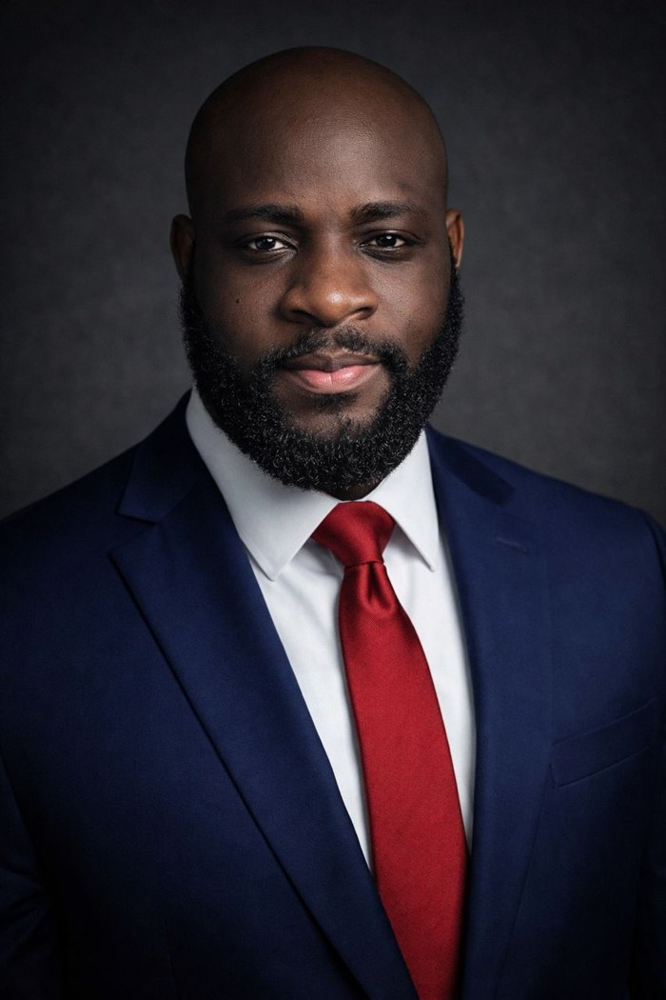
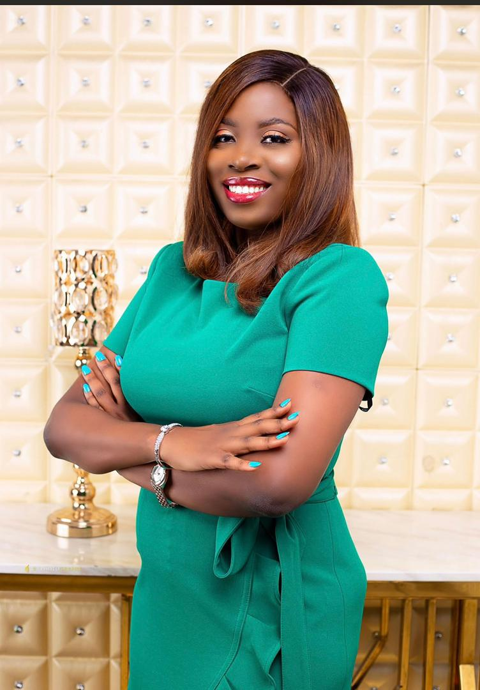
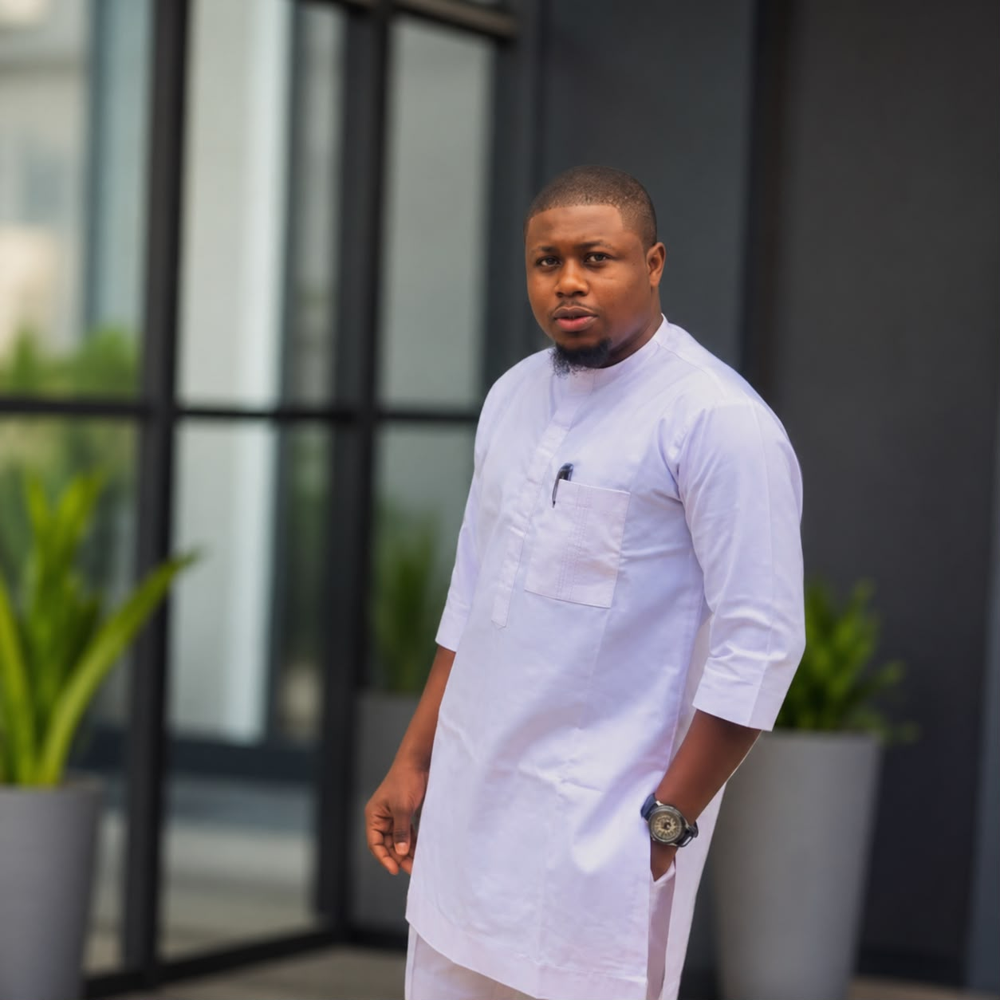
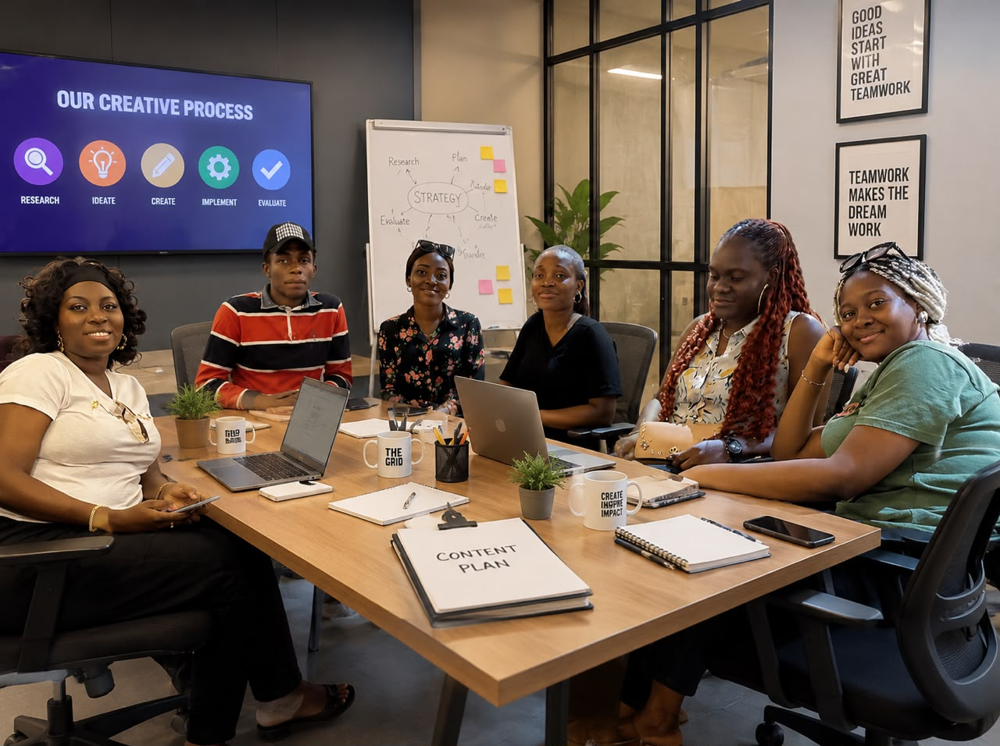
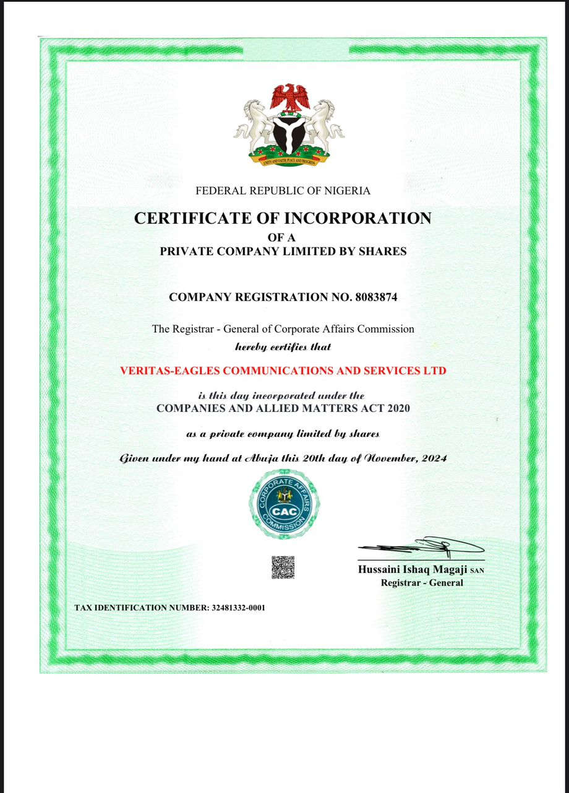

Driving Visibility, Building Trust
Strategic Communications & Media Relations for Institutions and Leaders
Our Name, Our Mission
Veritas-Eagles Communications draws from two inspiring elements to reflect our mission in the communications space. ‘Veritas’ is Latin for ‘truth,’ symbolising our commitment to honesty, transparency, and building unbreakable trust with clients and audiences. ‘Eagles’ evokes the majestic bird known for its unparalleled vision, strength, and ability to soar to great heights — representing how we drive visibility, elevate our clients, and rise above communication challenges.
Registration Number: RC 8083874
Tax ID: TIN 32481332-0001
Founded: 2024
Who We Are
Veritas-Eagles Communication and Services Ltd is a registered PR and Strategic Communication firm committed to shaping public perception, growing brand visibility, and driving high-level engagement for clients across Nigeria.
We deliver communication solutions backed by research, creativity, data, and media intelligence.
Our clients include government institutions, private organisations, startups, political leaders, and public figures who trust us to manage their reputation and amplify their message. We currently work with the Nigerian America Flag Football and other organisations.
Our Direction
To be Nigeria's most trusted PR and strategic communication partner for high-impact public engagement.
To deliver innovative and value-driven communication strategies that strengthen reputation and build trust.
What Guides Us
We uphold the highest ethical standards in all our communications.
Excellence and precision in every project we undertake.
Data-driven, research-backed communication solutions.
Innovative approaches to storytelling and engagement.
Leadership

Richard Olatunde is an experienced public relations and strategic communications expert with a background in governance communication, political strategy, digital media management, and reputation enhancement. His multidisciplinary expertise spans traditional media, new media platforms, and emerging technologies.
Richard's deep understanding of media dynamics, political communication, digital strategy, and technology integration positions Veritas-Eagles as a trusted partner for navigating complex, high-stakes communication challenges in today's rapidly evolving media environment.
Co-Lead Strategist

Arinola Olumogba Ajanaku is a process-driven Business Analyst and Associate Manager with over 8 years of experience providing advisory services, conducting business analysis, ensuring compliance, and driving overall performance management within the telecommunications industry. She brings analytical depth, strategic stakeholder engagement, and operational excellence to every client engagement at Veritas-Eagles.
Media Relations Officer

Maruf Hassan Abdullah is a motivated and versatile communications professional with a First Class degree in Mass Communication. His experience spans news writing, photojournalism, videography, and political communications — with a distinguished track record working at the heart of government communications in Ondo State under Richard Olatunde, where he served as Personal Assistant to the Chief Press Secretary to Governor Akeredolu.
Our People
At Veritas-Eagles, our strength lies not only in our leadership but in the driven, young talent we cultivate. Our team of creative interns bring fresh perspectives, innovative ideas, and a bold energy that keeps our work relevant and impactful.
Guided by Co-Lead Strategist Arinola Olumogba Ajanaku, our interns are actively involved in content strategy, media production, research, and client campaigns — gaining hands-on experience while delivering real results.

Why Us
Led by Richard Olatunde, an experienced public relations expert with a track record in government and political communication.
Extensive media relationships and digital expertise across traditional and new media platforms throughout Nigeria.
Tailored solutions with clear metrics and measurable outcomes that drive real business and reputational value.
Legal Standing
Veritas-Eagles Communication and Services Ltd is officially registered with the Corporate Affairs Commission (CAC) of Nigeria.

Contact us today to schedule a meeting and learn how we can help you drive visibility and build trust.
Get In Touch →